Manuale illustrato · italiano
AnonimAI
Un'app che legge i tuoi atti, contratti e sentenze, cancella i dati personali e ti restituisce un documento che puoi finalmente incollare in ChatGPT senza consegnargli il tuo cliente. Tutto succede dentro il tuo computer: niente esce, nemmeno per un istante.
Metti dentro un documento. L'app trova i nomi, i codici fiscali, gli IBAN, gli
indirizzi — e li sostituisce con etichette come [FULLNAME_1]. Tu porti
fuori il documento etichettato. Quando l'intelligenza artificiale ti risponde,
l'app rimette i nomi veri al posto delle etichette.
La finestra, in un colpo d'occhio
All'apertura vedi due colonne. A sinistra ciò che dai tu, a destra ciò che l'app ti ridà. In mezzo non c'è nient'altro: nessun menu nascosto, nessuna procedura guidata.
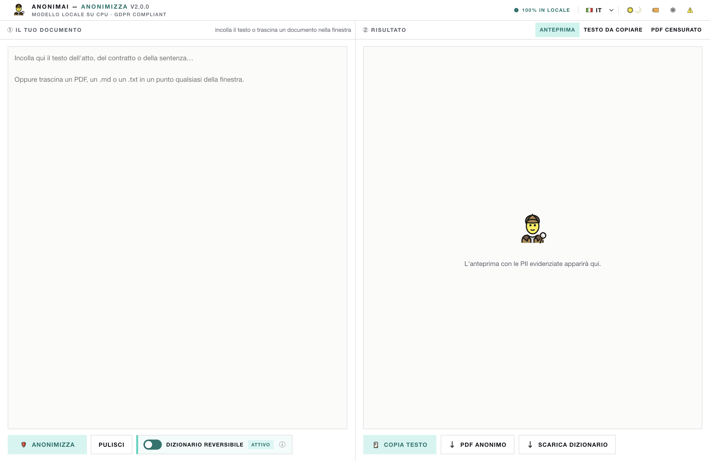
La testata
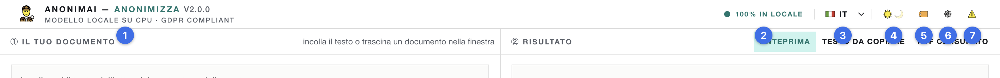
- 🕵️ AnonimAI — Anonimizza: non è solo un logo, è un interruttore. Cliccandolo passi a Deanonimizza e ritorni indietro. L'etichetta accanto al nome ti dice sempre dove sei.
- 100% in locale: il promemoria che i tuoi dati non stanno viaggiando da nessuna parte.
- 🇮🇹 IT / 🇬🇧 EN: la lingua dell'interfaccia. Non cambia nulla di come vengono trovati i dati.
- ☀️/🌙: tema chiaro o scuro.
- 🏷️: quali tipi di dato nascondere, e i tuoi Termini personali. Vedi il capitolo 10.
- ⚙️: le Impostazioni, in quattro schede. Vedi il capitolo 13.
- ⚠️: l'avviso «Versione in sviluppo». Cliccalo e leggilo una volta: dice che il modello può sbagliare e che va sempre riletto.
Le due colonne
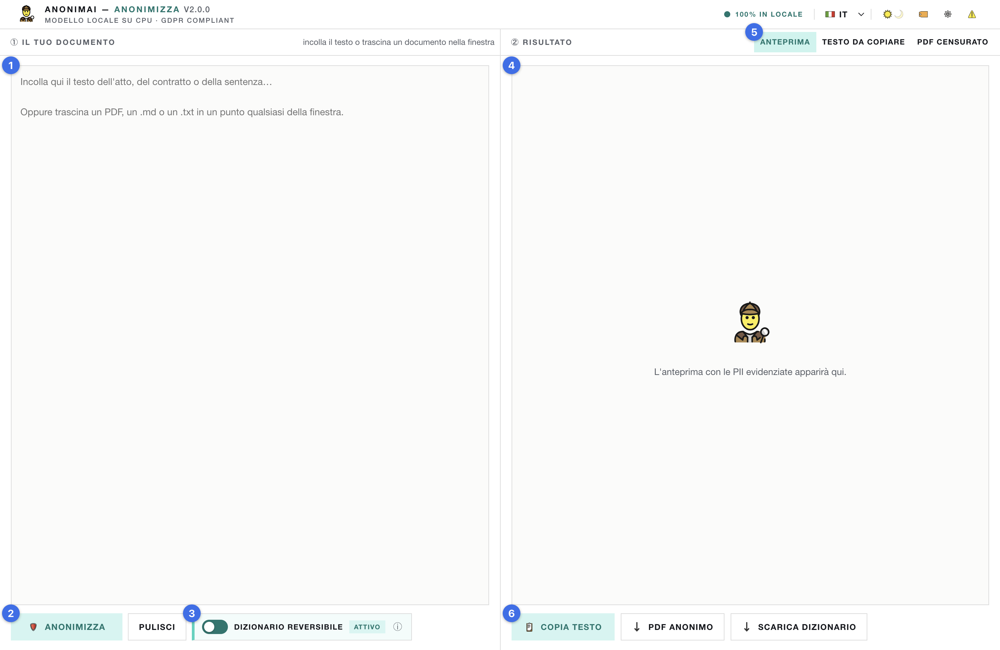
- Il riquadro dove incolli il testo — oppure dove compare il testo estratto dal PDF che hai aperto.
- 🛡️ Anonimizza: il bottone che fa partire tutto.
- Lo switch Dizionario reversibile. Acceso = potrai tornare indietro. Spento = l'anonimizzazione è definitiva (capitolo 11).
- Dove appare il risultato.
- Le tre viste del risultato: Anteprima, Testo da copiare, PDF censurato.
- I tre bottoni per portarti via il lavoro (capitolo 4).
Il primo giro: un testo incollato
Il modo più veloce per capire l'app è incollare due righe e premere il bottone.
- Clicca dentro il riquadro di sinistra e incolla il testo.
- Premi 🛡️ Anonimizza.
- Aspetta qualche secondo: il modello gira sul processore del tuo computer, non su un server.
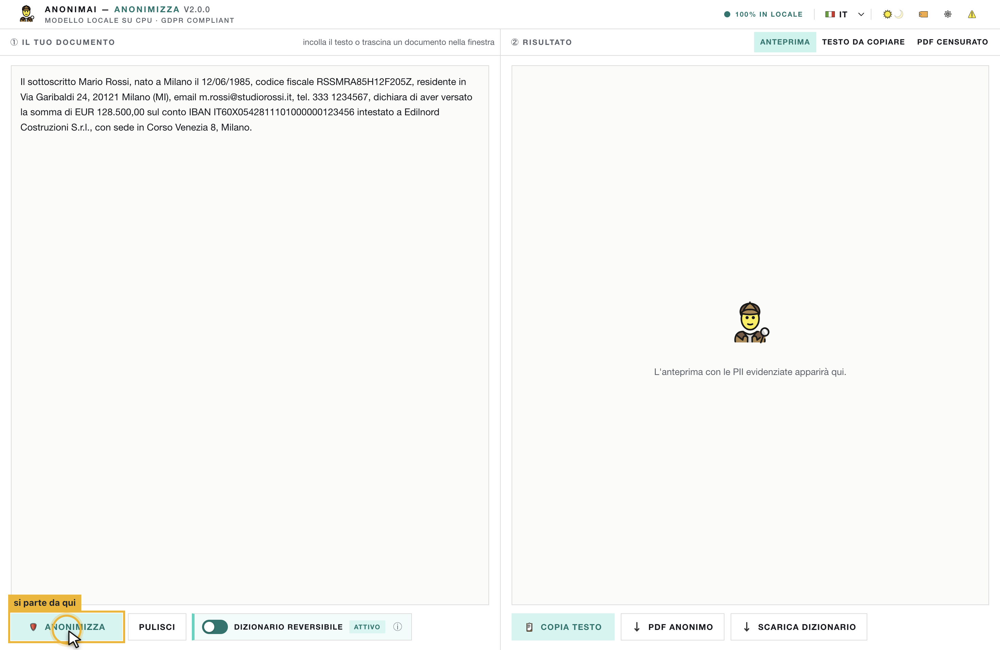
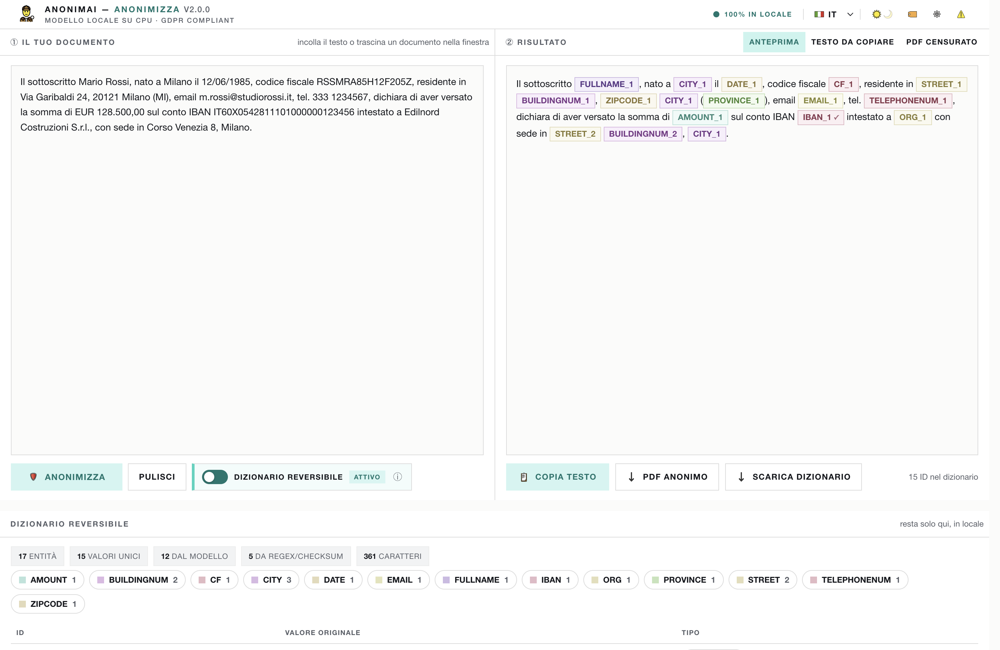
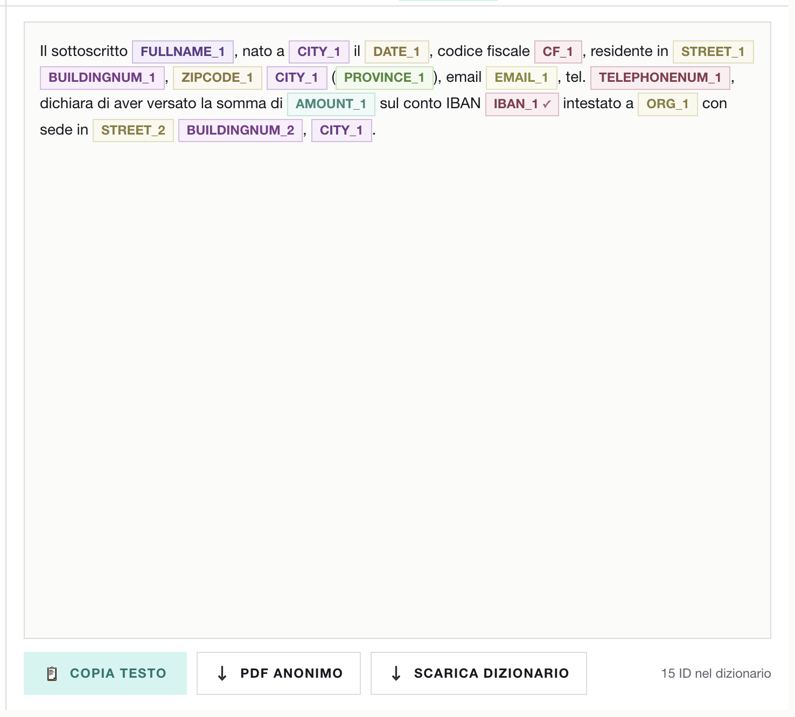
FULLNAME_1,
CITY_1, IBAN_1. Lo stesso numero significa la stessa persona,
lo stesso conto, la stessa città. Il segno ✓ accanto a un'etichetta vuol dire che
il valore è stato verificato con un calcolo matematico (il codice fiscale, l'IBAN e la
partita IVA hanno una cifra di controllo: se torna, non è un caso).Il modello non è perfetto. Può saltare un nome scritto in modo strano o scambiare una sigla per qualcos'altro. La rilettura è tua e non si delega.
Che cosa ti sta dicendo il risultato
La tabella in fondo
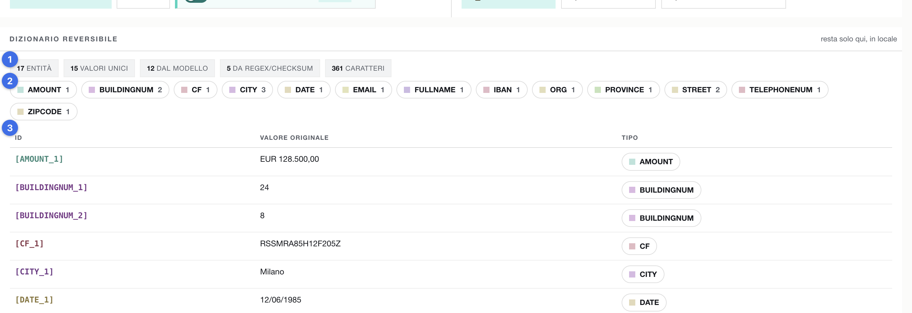
- I conti: quante entità in tutto, quanti valori diversi, quante trovate dal modello e quante dalla rete di espressioni regolari con checksum, e la lunghezza del testo.
- La legenda dei tipi trovati, con quante volte ciascuno. Cliccando un tipo lo spegni nell'anteprima: serve a guardare una cosa alla volta, non cambia il risultato.
- La tabella: etichetta → valore originale → tipo. Questa tabella è la chiave del ritorno indietro. Vale quanto il documento originale.
Le tre viste
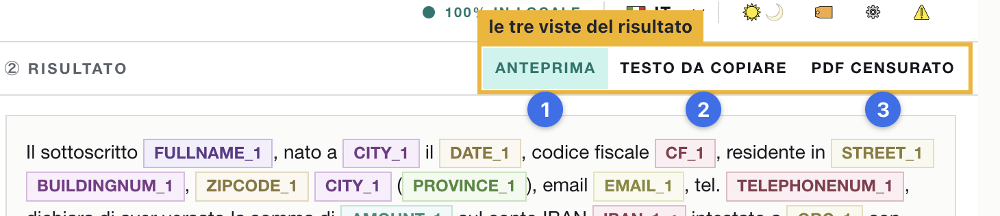
- Anteprima: il testo con le etichette colorate. È per capire, non per copiare.
- Testo da copiare: lo stesso testo, pulito, pronto da incollare in una chat.
- PDF censurato: il documento vero, redatto, pagina per pagina (funziona anche se avevi incollato solo del testo: in quel caso il PDF viene impaginato da zero).
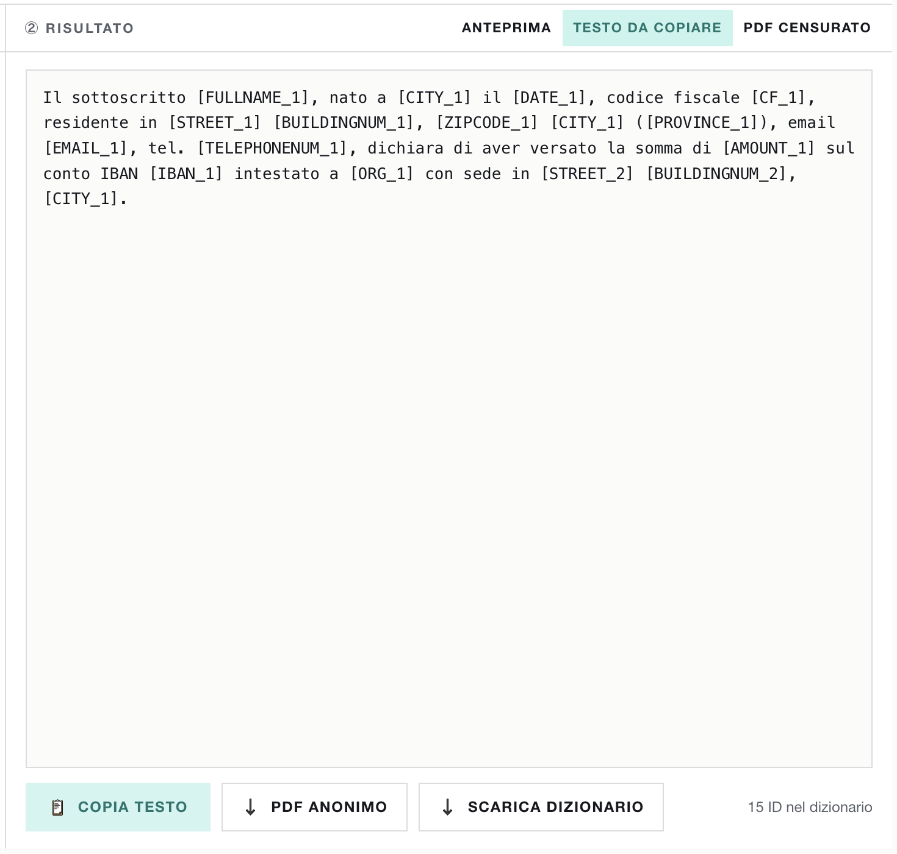
I tre bottoni, e quale scegliere
Sotto il risultato ci sono tre bottoni. Se ci lasci sopra il puntatore per un secondo, ciascuno ti spiega da solo a cosa serve.
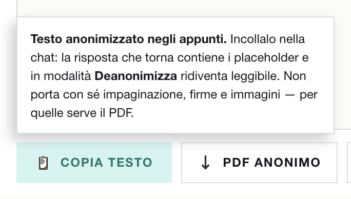
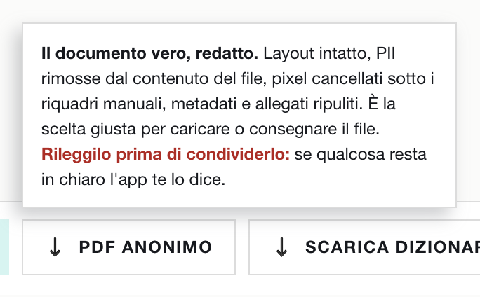
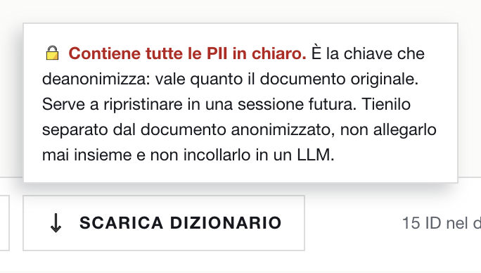
| Vuoi… | Usa | Perché |
|---|---|---|
| chiedere all'AI di riassumere, rispondere, riformulare | 📋 Copia testo | porta solo le parole: niente impaginazione, niente firme, niente immagini |
| mandare o caricare il documento | ⬇️ PDF anonimo | è l'unico che protegge anche ciò che non è testo |
| poter ricostruire i nomi veri domani, o su un altro computer | ⬇️ Scarica dizionario | salva il file dizionario_anonimizzazione.json |
Il dizionario contiene tutte le PII in chiaro. Chi ce l'ha può deanonimizzare qualunque cosa. Non allegarlo mai insieme al documento anonimizzato, non tenerlo nella stessa cartella condivisa, non incollarlo in un LLM.
Un PDF vero
Non c'è un riquadro «trascina qui». Puoi lasciare il file in un punto qualsiasi della finestra: mentre lo trascini compare un velo con la scritta «Rilascia il documento — PDF, .md o .txt».
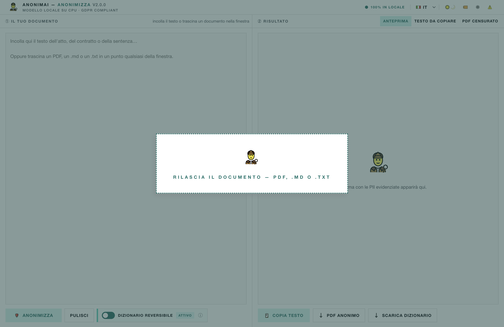
Appena il PDF è dentro, la colonna di sinistra lo mostra: non il testo grezzo, il documento come sarebbe stampato.
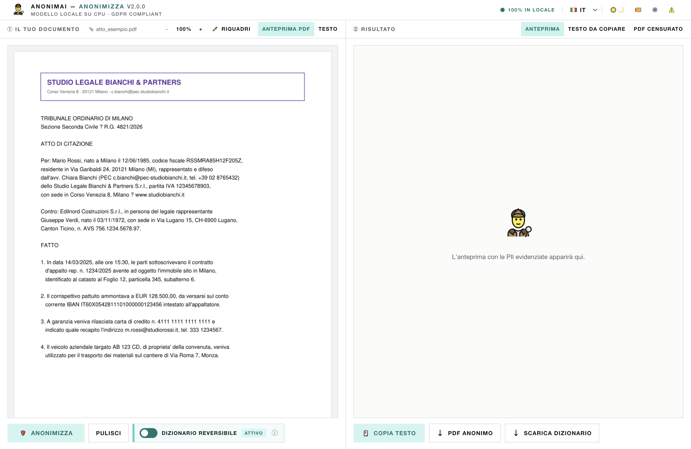
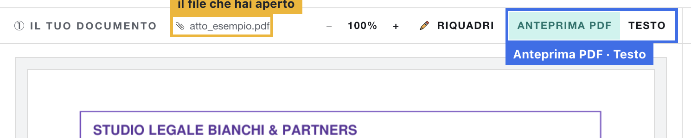
Dai sempre un'occhiata alla vista Testo prima di anonimizzare: quello, e solo quello, è ciò che il modello leggerà.
Ingrandire per leggere
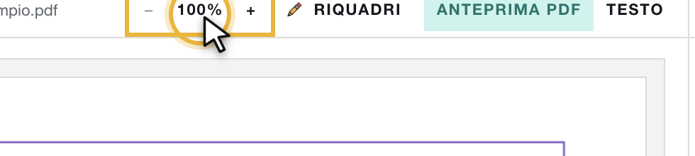
- − e + vanno a passi;
- il numero in mezzo (100%) riporta tutto alla larghezza della colonna con un click;
- ctrl (o ⌘) + rotella — cioè il pinch del trackpad — ingrandisce nel punto dove tieni il puntatore;
- doppio click sulla pagina: 100% ⇄ 200%.
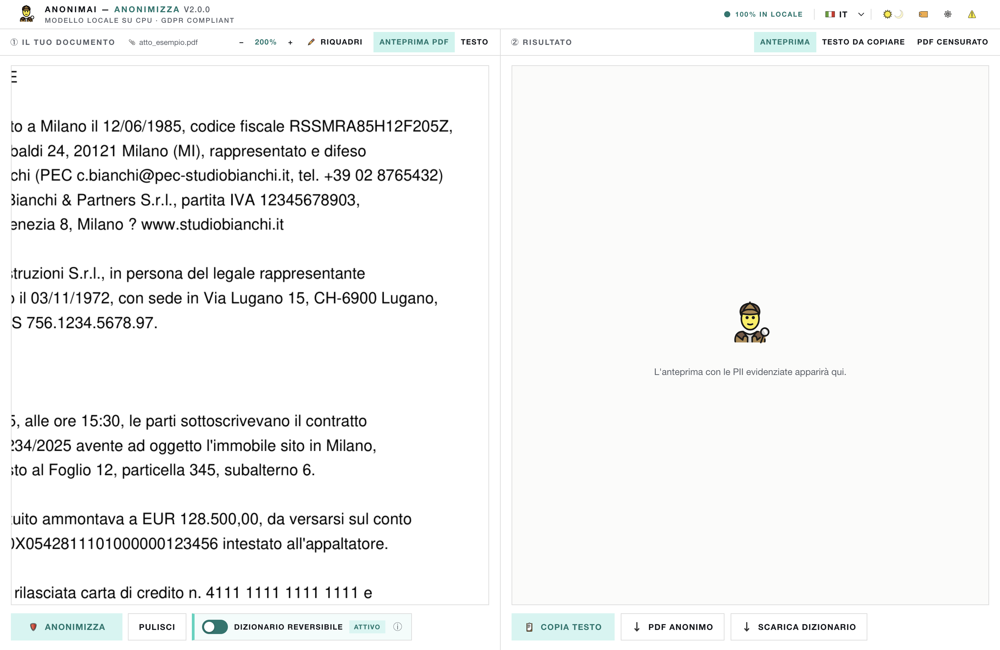
Oltre a 1,5× le pagine che stai guardando vengono richieste a risoluzione maggiore, così il testo non sgrana. Lo zoom va da 100% a 300%: sotto il 100% non si scende.
Firme e timbri: i riquadri manuali
Una firma non è testo: è un disegno. Un timbro nemmeno. Nessun modello li legge, quindi nessun modello può cancellarli. Glieli devi indicare tu.
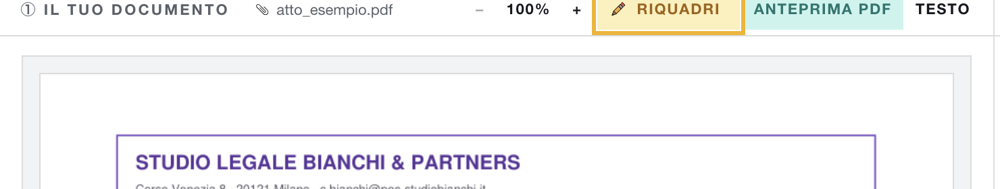
- Premi ✏️ Riquadri.
- Trascina il mouse sopra la firma o il timbro: nasce un rettangolo giallo.
- Sbagliato? Clicca il rettangolo e sparisce.
- Il numero accanto al bottone conta quanti ne hai messi.
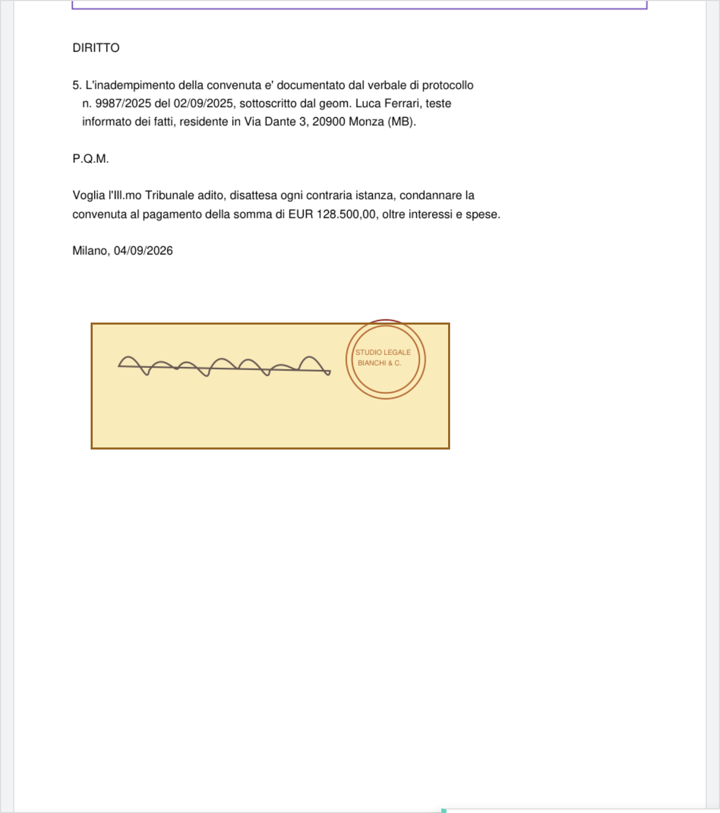
I riquadri si possono disegnare solo su un PDF (non sul testo incollato), e vivono con quel documento: se carichi un altro file, ricominci. In compenso, con almeno un riquadro il PDF si scarica anche se non è stata trovata nessuna PII testuale — è il caso della scansione con la sola firma.
Il PDF censurato
Terza vista a destra: PDF censurato. L'app prende il tuo documento, gli toglie i dati personali dal contenuto del file e te lo rimostra impaginato come prima.
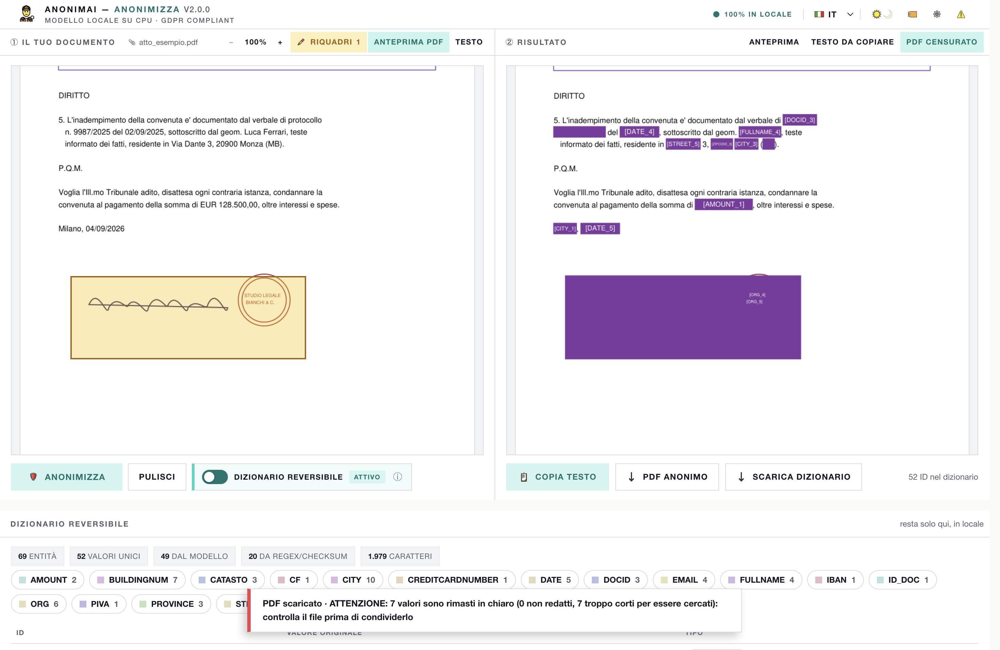
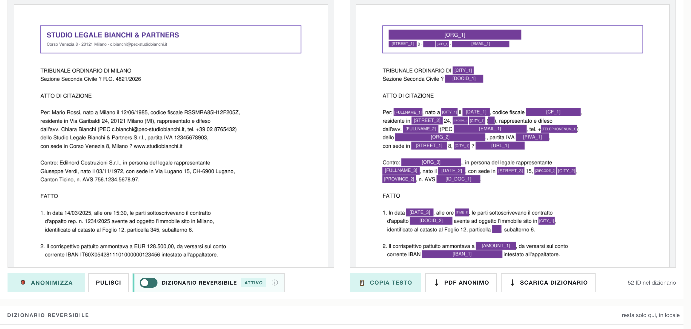
Quando l'app ti avvisa
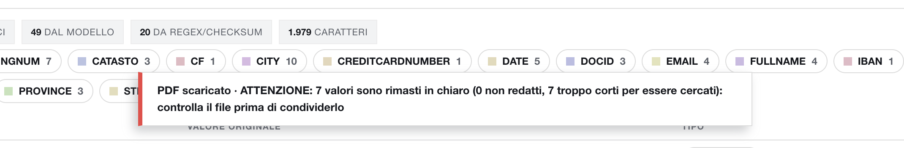
Due casi in cui un valore resta leggibile, e in tutti e due l'app te lo dice invece di consegnarti un file che sembra anonimo:
- residui — l'app rilegge il documento che ha appena prodotto e trova che un valore è ancora lì;
- saltati — valori troppo corti (meno di due caratteri, o due sole cifre come «45»): cercarli nel documento devasterebbe tutto il resto.
Vengono ripuliti anche i metadati, il contenuto delle annotazioni, i campi modulo e i titoli dei segnalibri; gli allegati incorporati vengono rimossi. Sono tutti posti in cui un dato personale sopravvive a una cancellatura fatta male.
Per costruire il PDF il computer ha bisogno della corrispondenza etichetta → valore, ma non gliela manda il browser: la ricostruisce sul momento e la butta appena finito. Per questo il bottone funziona identico anche con lo switch Dizionario reversibile spento.
Scansioni e fotografie: l'OCR
Se il PDF è una fotografia del documento, dentro non ci sono parole: ci sono pixel. L'app se ne accorge da sola e passa dal riconoscimento ottico dei caratteri (OCR).
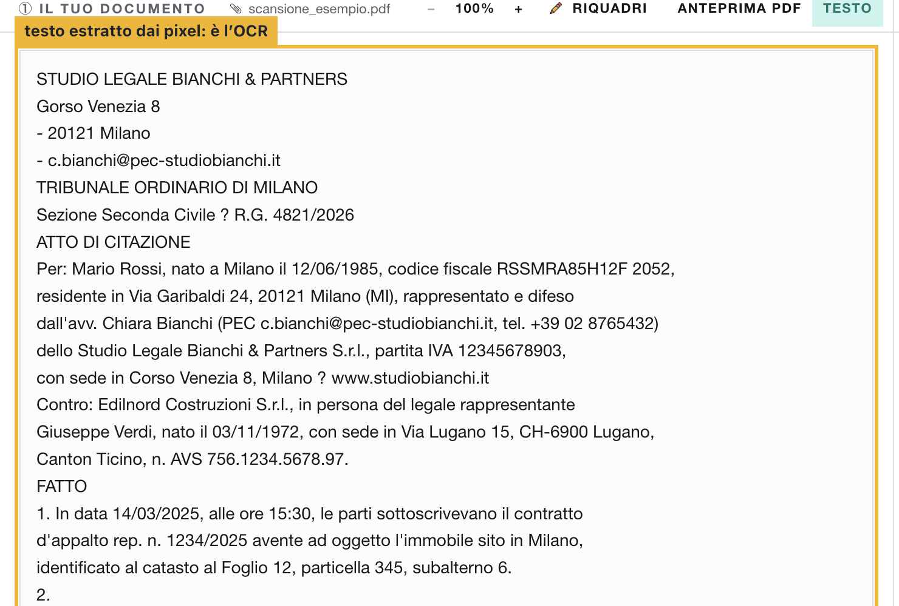
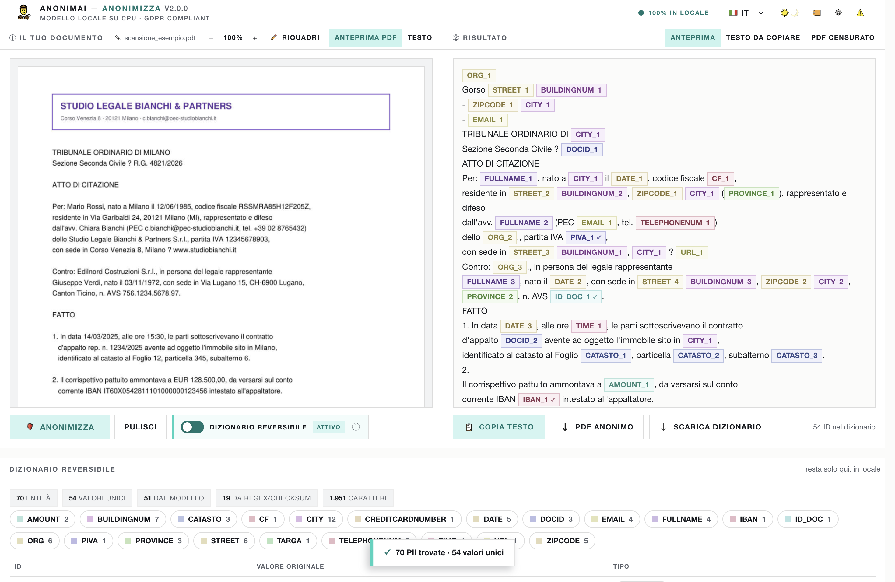
- Funziona in tre modi, decisi pagina per pagina: solo testo (nessun OCR), scansione (tutto OCR), ibrida — la carta intestata è un'immagine incollata su una pagina normale, e viene letta anche quella.
- Sulla pagina redatta viene riscritto un livello di testo invisibile: il PDF che scarichi resta ricercabile, ma le parole che erano dati personali non ci finiscono dentro.
- Il controllo dei residui ri-legge con l'OCR le pagine toccate. Senza questo, su una scansione l'app direbbe sempre «zero residui» — e sarebbe una bugia.
All'OCR servono dei file di lingua installati. Se mancano, un PDF fotografato non può essere redatto: l'app te lo dice al momento, con l'istruzione per abilitarlo, invece di restituirti il file intatto. Non c'è una spia dell'OCR in nessuna schermata: se la scansione si anonimizza, l'OCR c'è.
Scritte verticali e sigle a margine (protocolli, numeri laterali). Lì la strada giusta è il riquadro manuale.
Scegliere che cosa nascondere
L'icona 🏷️ nella testata apre l'elenco dei 23 tipi di dato che l'app conosce, con la descrizione e un esempio di ciascuno.
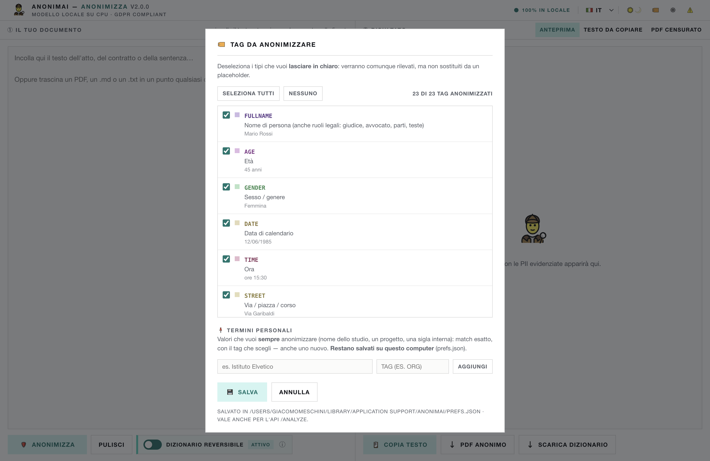
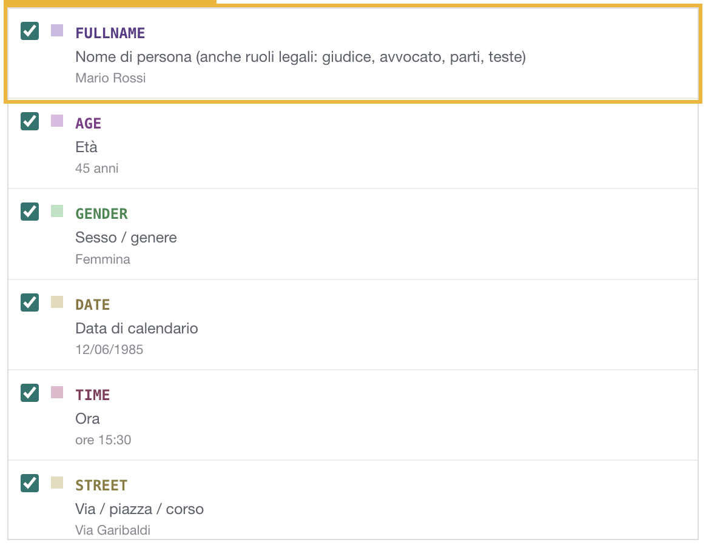
📌 I Termini personali
In fondo alla stessa finestra c'è la parte più utile per uno studio: la lista dei valori che vuoi sempre nascosti, anche se nessun modello li riconoscerebbe — il nome del tuo studio, il nome in codice di una pratica, una sigla interna.
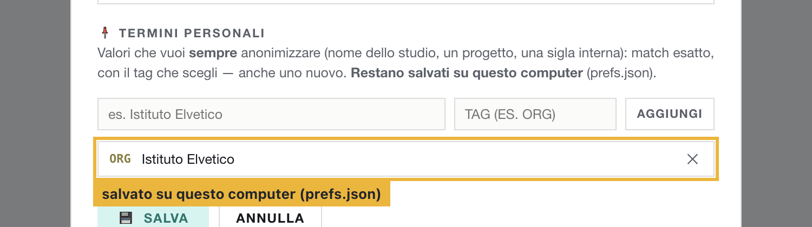
- Il confronto è letterale e rispetta i confini di parola: «Elvetico» non scatta dentro un'altra parola.
- Un termine personale ha la precedenza su tutto, modello compreso.
- Servono almeno 3 caratteri; il tag va da 2 a 20 fra lettere, cifre e
_.
I Termini personali sono salvati in chiaro nel file delle preferenze di
questo computer (prefs.json). È voluto — sono i valori che hai chiesto
di rilevare sempre — ma ricordatene se il computer cambia mani.
Le due scelte (tag esclusi e termini) restano anche dopo aver chiuso l'app, e valgono anche per chi usa AnonimAI da programma. Annulla chiude senza salvare.
Il dizionario reversibile: la chiave
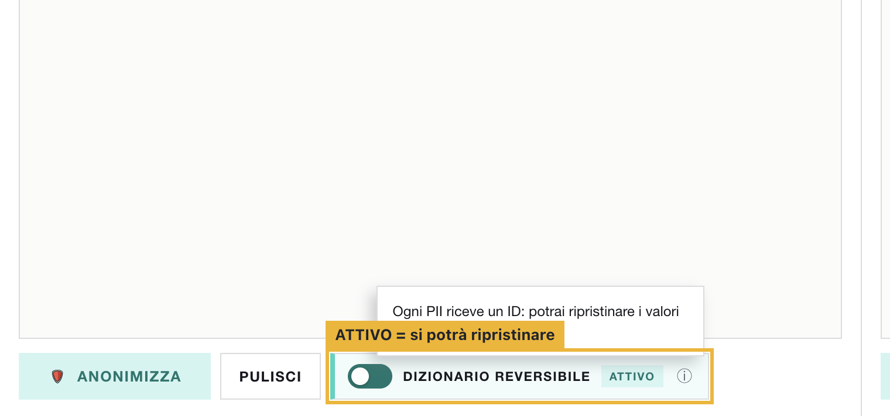
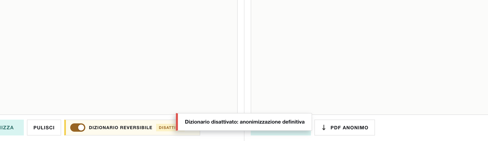
La numerazione resta anche da spento: due volte [FULLNAME_1] vogliono
dire la stessa persona. Serve all'AI per ragionare, e da sola non riporta al nome.
Con il dizionario acceso quella che hai in mano è una pseudonimizzazione: finché il dizionario esiste, per la legge resta dato personale. Con il dizionario spento l'anonimizzazione è definitiva.
Rimettere i valori veri
Hai incollato il testo anonimo in ChatGPT, ti ha risposto, e la risposta è piena
di [FULLNAME_1]. Ora torni qui.
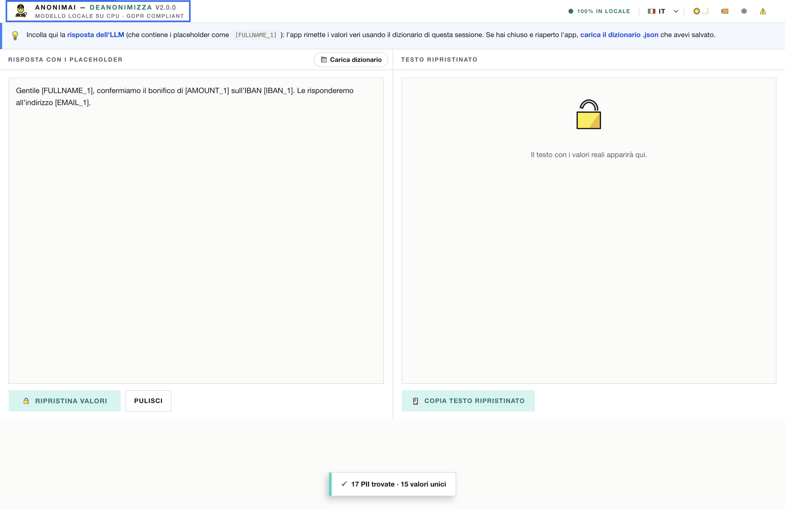
- Incolla la risposta dell'AI nel riquadro di sinistra.
- Premi 🔓 Ripristina valori.
- A destra compare il testo con i nomi veri; 📋 Copia testo ripristinato te lo mette negli appunti.
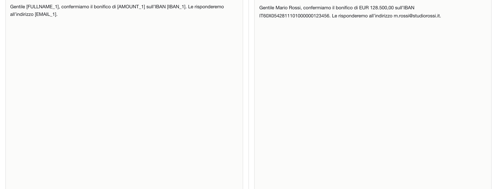
- Se hai chiuso e riaperto l'app, usa 📁 Carica dizionario e scegli
il
.jsonche avevi salvato. - Il ripristino è tollerante: funziona anche se l'AI ha scritto
**[IBAN_1]**in grassetto o ha tolto le parentesi quadre. - Pulisci, nella schermata Anonimizza, cancella il dizionario della sessione: da lì in poi serve il file salvato.
Le Impostazioni (⚙️)
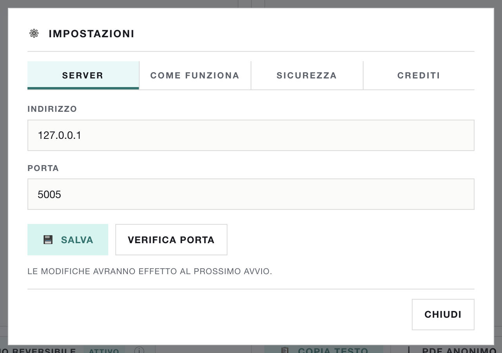
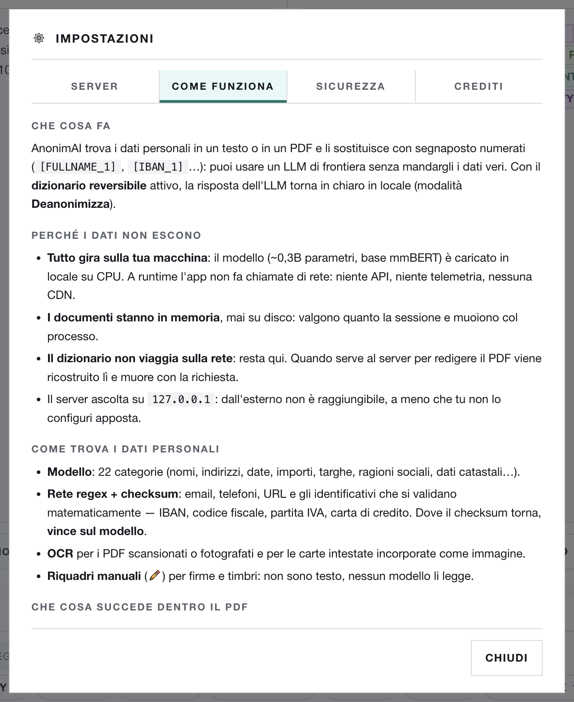
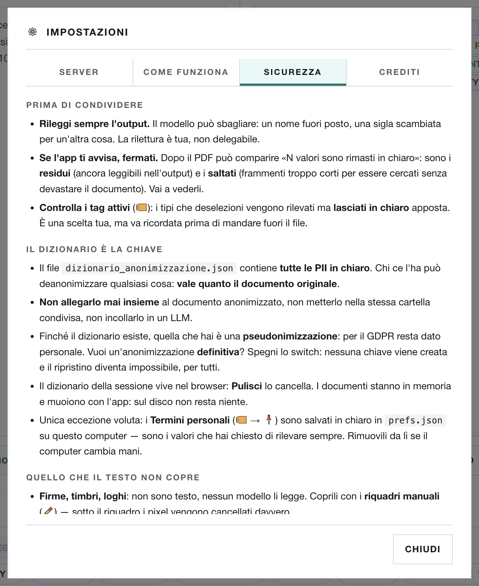
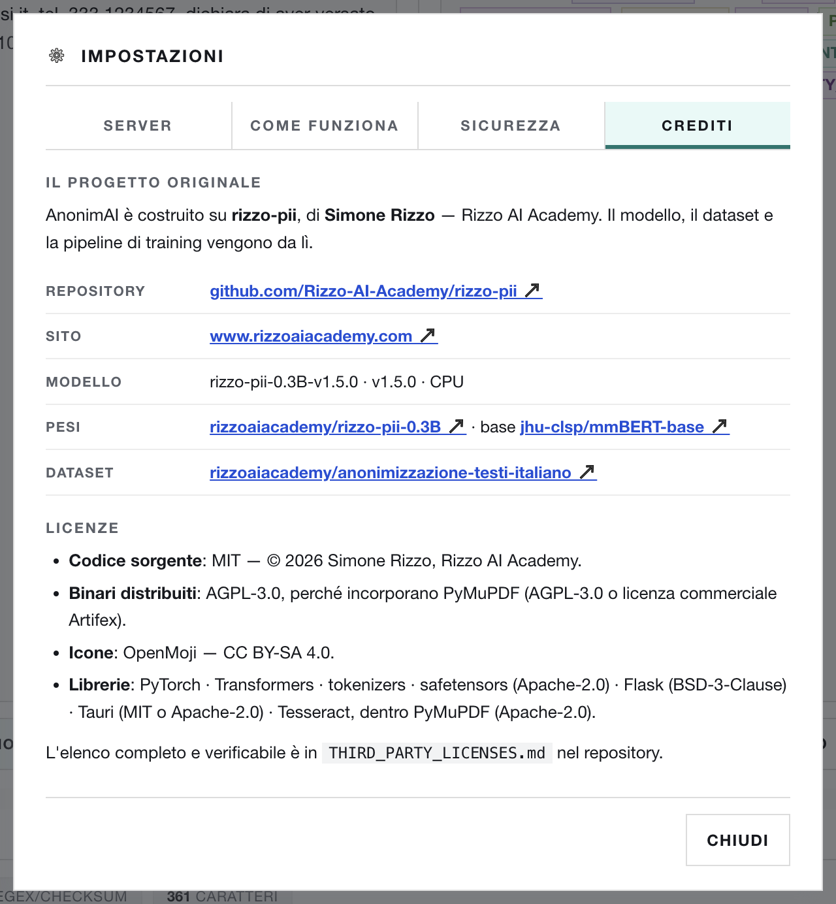
Tema, lingua, avviso
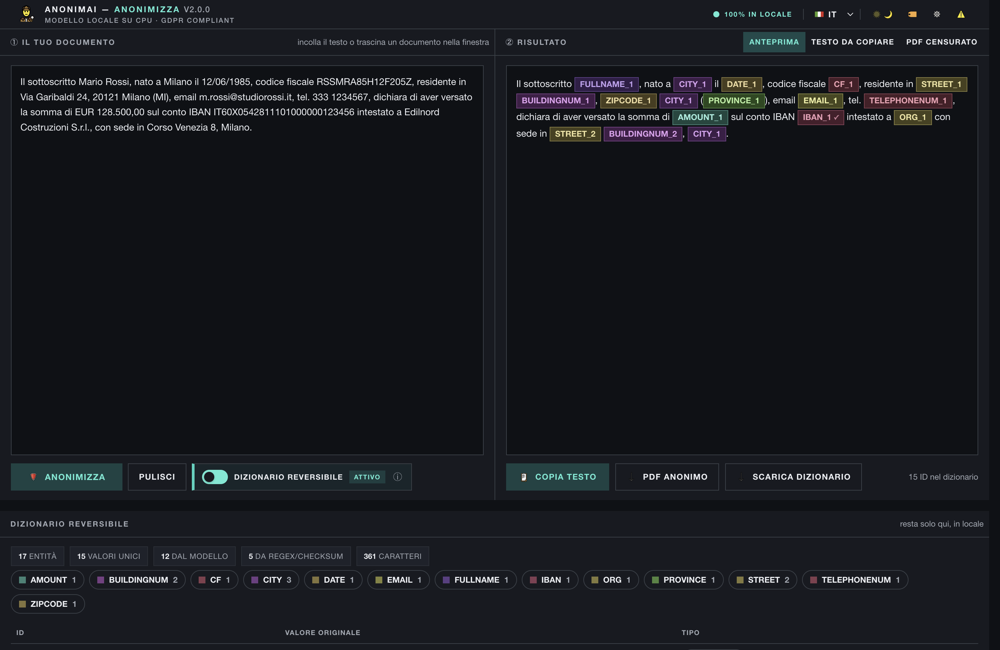
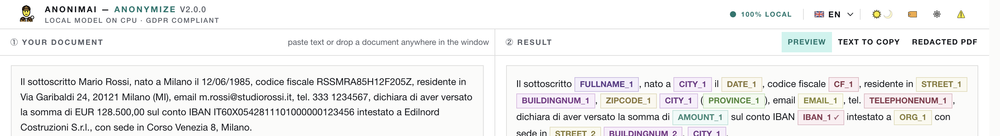
FULLNAME, IBAN…): cambiano le spiegazioni, non le etichette.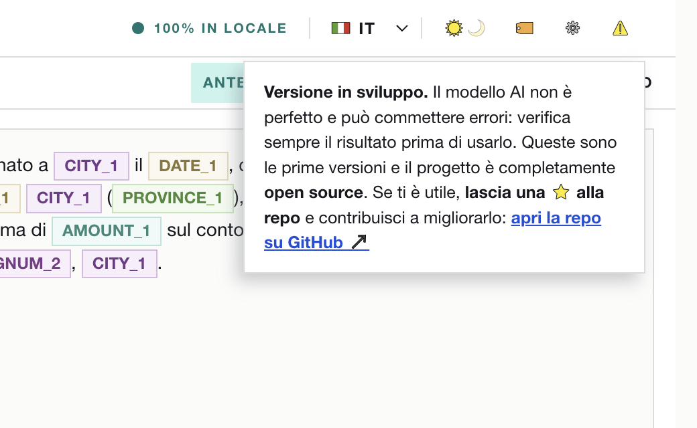
Tasti
| Tasto / gesto | Effetto |
|---|---|
| Esc | chiude l'avviso, le Impostazioni, i Tag |
| ctrl/⌘ + rotella, o pinch | zoom sull'anteprima, nel punto del puntatore |
| doppio click sull'anteprima | 100% ⇄ 200% (non in modalità Riquadri) |
| Invio nei campi dei Termini personali | aggiunge il termine |
| click su un tipo nella legenda | lo spegne o riaccende nell'anteprima |
Dove finiscono le tue cose
Vale la pena saperlo con precisione, perché è l'unica risposta onesta alla domanda «ma dove va a finire il mio documento?».
| Cosa | Dove sta | Quanto vive |
|---|---|---|
| il documento che carichi | in memoria, mai su disco | muore chiudendo l'app; ne restano al massimo 6, poi cade il più vecchio |
| il dizionario della sessione | nel browser dell'app | fino a Pulisci o finché non ne nasce uno nuovo |
| il dizionario che scarichi tu | dove lo salvi | per sempre: è tuo, e va custodito |
| tag esclusi, switch del dizionario, Termini personali | prefs.json nella cartella dati dell'app | finché non li cambi |
| indirizzo e porta | config.json, stessa cartella | finché non li cambi |
macOS ~/Library/Application Support/anonimai/ config.json · prefs.json
~/anonimai/backend.log il diario dell'app, se l'hai avviata come programma
Windows %LOCALAPPDATA%\anonimai\ config.json · prefs.json · backend.log
Linux ~/.local/share/anonimai/ config.json · prefs.json
~/anonimai/backend.log
Se un documento è rimasto aperto troppo a lungo e nel frattempo ne hai caricati altri, l'anteprima ti avvisa: «Documento non più in memoria: ricaricalo per rivedere le pagine». Non è un errore, è la memoria che si è liberata.
Il server sta in ascolto su 127.0.0.1: solo questo computer. Anche
volendo esporlo fuori, l'app non chiama nessuno: nessuna API, nessuna
telemetria, nessun font o libreria scaricati da internet.
Che cosa NON esiste
Per non farti cercare cose che non ci sono.
- Non c'è un modo per aggiungere a mano una PII nel testo: se il modello salta un nome, gli strumenti sono i Termini personali (per un valore che ricorre) o il riquadro manuale nel PDF.
- Non c'è una cronologia dei documenti: nessun elenco dei file passati, nessuna cartella di lavoro.
- Non c'è account, login, sincronizzazione, aggiornamento automatico.
- Non si deanonimizza un PDF: la modalità Deanonimizza lavora solo sul testo che incolli.
- Non si trascina un file in modalità Deanonimizza: il velo compare solo in Anonimizza.
- Non si carica il dizionario dalla schermata Anonimizza: il bottone 📁 Carica dizionario vive solo in Deanonimizza.
- L'anteprima non è un lettore PDF: sono immagini delle pagine, quindi non si seleziona il testo e non c'è una ricerca dentro il documento.
- Non c'è un annulla generale: un riquadro si toglie cliccandolo, un tag si rimette spuntandolo, il resto si rifà con Pulisci.
- Non c'è un bottone «stampa»: si scarica il PDF e si stampa da lì.
- Non c'è nessuna barra di avanzamento con le percentuali: quando l'app sta lavorando te lo dice il bottone stesso, che gira.
Nel dubbio, scarica il PDF anonimo e rileggilo. È l'unico formato che protegge anche ciò che non è testo, ed è l'unico che ti avvisa quando qualcosa non è riuscito a nascondere.